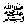

Abu Hurairahrelates that Rasulullah 
Note: The Ulama have three different interpretations about this Hadeeth.
Firstly, this Hadeeth may mean that those who fast during the day and then for breaking the fast eat food that is haraam. All the reward for fasting is lost because of the greater sin of eating haraam food and nothing is gained except remaining hungry.
Secondly, it may mean those who fast but during fasting busy themselves in backbiting and falsely accusing others.
Thirdly, the person referred to may be one, who did not stay away from evil and sin while fasting.
In this Hadeeth, all such possibilities are included. Similar, is the case of the person performing Salaah the entire night but because of backbiting or any other sinful act (e.g. missing Fajr Salaah or keeping awake for show), loses the reward for his night of worship.